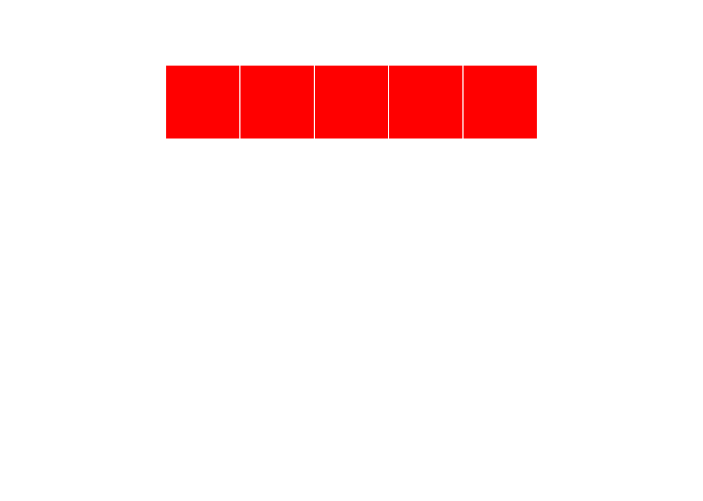
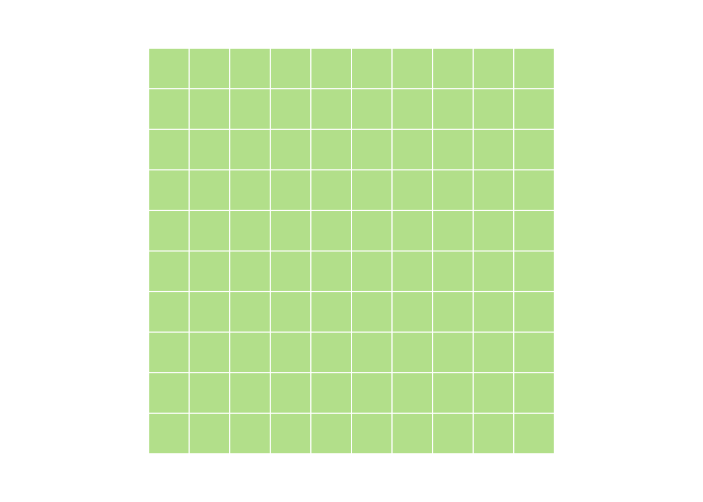

Chapter 5 Vectors
In this chapter, we’re going to learn about vectors, one of the key building blocks of R programming. By the end of this chapter, you will know:
- What is a vector?
- How are vectors created?
- What are data types and how can I tell what sort of data I’m working with?
- What is metadata?
- How can I summarize a vector?
5.1 What is a vector?
Enter a value at the console and hit enter. What do we see?

Console returning one value
This makes a bit of sense. We entered 2 and we got back 2. But what’s that 1 in brackets? Things get even weirder when we ask R to return more than one value. Type “letters” (without the quotes) and have a look.
Console returning more than one value
Now there’s not only a 1 in brackets, there’s also a 16 on the second line. (Note that your console may appear a bit different than mine.) You’re probably clever enough to have figured out that the numbers in brackets have something to do with the number of outputs generated. In the second case, “p” is the 16th letter of the alphabet and the bracketed 16 helps us know where we are in the sequence when it spills onto multiple lines.
OK, cool. So what?
So everything! In R, every variable is a vector. When we entered the number 2 at the console, we were creating (briefly) a vector which had a length of 1.“letters” is a special vector with one element for each letter of the English alphabet. Vectors allow us to reason about a lot of data at once. The variable “letters” for instance enables us to store 26 values in one place. Further, it allows us to make changes to all of the elements of the vector at the same time. For example:
paste("Letter", letters)## [1] "Letter a" "Letter b" "Letter c" "Letter d" "Letter e" "Letter f"
## [7] "Letter g" "Letter h" "Letter i" "Letter j" "Letter k" "Letter l"
## [13] "Letter m" "Letter n" "Letter o" "Letter p" "Letter q" "Letter r"
## [19] "Letter s" "Letter t" "Letter u" "Letter v" "Letter w" "Letter x"
## [25] "Letter y" "Letter z"Using the paste0 command, we took each element of “letters” and prefixed it with the text “Letter”. This is similar to applyinig the same function to a set of contiguous cells in a spreadsheet. But in this case, I didn’t need to copy and paste something 26 times. I didn’t even need to worry about how many times the command needed to be repeated. Vectors can grow and shrink automatically. No need to move cells around on a sheet. No need to copy formulas or change named ranges. R just did it. (Note that by default the paste function will automatically add a blank space between elements. The function paste0 will concatenate elements without a space. Try it.)
5.1.1 Vector properties
All vectors share some basic properties
- Every element in a vector must be the same type.
- R will change data types if they are not!
- Different types are possible by using a list or a data frame (later)
- It’s possible to add metadata (like names) via attributes
- Vectors have one dimension
- Higher dimensions are possible via matrices and arrays
As we’ll see later, the issue of dimension is a bit arbitrary. At this point, the key thing to bear in mind is that all of the data is of the same type. Later on, we’ll talk about the various data types that R supports. For now, it should be fairly clear from the context.
5.1.2 Vector construction
There’s no real trick here. You’ll be constructing vectors whether you want to be or not. But let’s talk about a few core functions for vector construction and manipulation.
5.1.3 seq
seq is used often to generate a sequence of values. The colon operator : is a shortcut for a sequence of integers.
pies = seq(from = 0, by = pi, length.out = 5)
i <- 1:5
year = 2000:20045.1.4 rep
The rep function will replicate its input
i = rep(pi, 100)
head(i)## [1] 3.141593 3.141593 3.141593 3.141593 3.141593 3.1415935.1.5 Concatenation
The c() function will concatenate values.
i <- c(1, 2, 3, 4, 5)
j <- c(6, 7, 8, 9, 10)
k <- c(i, j)
l <- c(1:5, 6:10)
5.1.6 Growth by assignment
Assigning a value beyond a vectors limits will automatically grow the vector. Interim values are assigned NA.
i <- 1:10
i[30] = pi
i## [1] 1.000000 2.000000 3.000000 4.000000 5.000000 6.000000 7.000000
## [8] 8.000000 9.000000 10.000000 NA NA NA NA
## [15] NA NA NA NA NA NA NA
## [22] NA NA NA NA NA NA NA
## [29] NA 3.1415935.1.7 Vector access - by index
Vectors may be accessed by their numeric indices. Remember, ‘:’ is shorthand to generate a sequence.
set.seed(1234)
e <- rnorm(100)
e[1]## [1] -1.207066e[1:4]## [1] -1.2070657 0.2774292 1.0844412 -2.3456977e[c(1,3)]## [1] -1.207066 1.0844415.1.8 Vector access - logical access
Vectors may be accessed logically. This may be done by passing in a logical vector, or a logical expression.
i = 5:9
i[c(TRUE, FALSE, FALSE, FALSE, TRUE)]## [1] 5 9i[i > 7]## [1] 8 9b = i > 7
b## [1] FALSE FALSE FALSE TRUE TRUEi[b]## [1] 8 95.1.9 which
The which function returns indices that match a logical expression.
i <- 11:20
which(i > 12)## [1] 3 4 5 6 7 8 9 10i[which(i > 12)]## [1] 13 14 15 16 17 18 19 205.1.10 sample
The sample function will generate a random sample. Great to use for randomizing a vector.
months <- c("January", "February", "March", "April"
, "May", "June", "July", "August"
, "September", "October", "November", "December")
set.seed(1234)
mixedMonths <- sample(months)
head(mixedMonths)## [1] "February" "July" "November" "June" "October" "May"Get lots of months with the size parameter:
set.seed(1234)
lotsOfMonths <- sample(months, size = 100, replace = TRUE)
head(lotsOfMonths)## [1] "February" "August" "August" "August" "November" "August"5.1.11 sample II
Sample may also be used within the indexing of the vector itself:
set.seed(1234)
moreMonths <- months[sample(1:12, replace=TRUE, size=100)]
head(moreMonths)## [1] "February" "August" "August" "August" "November" "August"# Cleaner with sample.int
set.seed(1234)
evenMoreMonths <- months[sample.int(length(months), size=100, replace=TRUE)]
head(evenMoreMonths)## [1] "February" "August" "August" "August" "November" "August"5.1.12 order
The function order will return the indices of the vector in order.
set.seed(1234)
x <- sample(1:10)
x## [1] 2 6 5 8 9 4 1 7 10 3order(x)## [1] 7 1 10 6 3 2 8 4 5 9x[order(x)]## [1] 1 2 3 4 5 6 7 8 9 105.1.13 Vector arithmetic
Vectors may be used in arithmetic operations.
B0 <- 5
B1 <- 1.5
set.seed(1234)
e <- rnorm(N, mean = 0, sd = 1)
X1 <- rep(seq(1,10),10)
Y <- B0 + B1 * X1 + eY is now a vector with length equal to the longest vector used in the calculation.
Question: B0 and B1 are vectors of length 1.
X1 and e are vectors of length 100.
How are they combined?
5.1.14 Recycling
R will “recycle” vectors until there are enough elements to perform an operation. Everything gets as “long” as the longest vector in the operation. For scalar operations on a vector this doesn’t involve any drama. Try the following code:
vector1 = 1:10
vector2 = 1:5
scalar = 3
print(vector1 + scalar)## [1] 4 5 6 7 8 9 10 11 12 13print(vector2 + scalar)## [1] 4 5 6 7 8print(vector1 + vector2)## [1] 2 4 6 8 10 7 9 11 13 155.1.15 Set theory - Part I
The %in% operator will return a logical vector indicating whether or not an element of the first set is contained in the second set.
x <- 1:10
y <- 5:15
x %in% y## [1] FALSE FALSE FALSE FALSE TRUE TRUE TRUE TRUE TRUE TRUE5.1.16 Set theory - Part II
unionintersectsetdiffsetequalis.element
?unionx <- 1900:1910
y <- 1905:1915
intersect(x, y)## [1] 1905 1906 1907 1908 1909 1910setdiff(x, y)## [1] 1900 1901 1902 1903 1904setequal(x, y)## [1] FALSEis.element(1941, y)## [1] FALSE5.1.17 Summarization
Loads of functions take vector input and return scalar output. Translation of a large sest of numbers into a few, informative values is one of the cornerstones of statistics.
x = 1:50
sum(x)
mean(x)
max(x)
length(x)
var(x)5.1.18 Vectors
Vectors are like atoms. If you understand vectors- how to create them, how to manipulate them, how to access the elements, you’re well on your way to grasping how to handle other objects in R.
Vectors may combine to form molecules, but fundamentally, everything in R is a vector.
5.2 From data
- Data types
- From vectors to matrices and lists
5.2.1 Data types
- logical
- integer
- double
- character
5.2.2 What is it?
x <- 6
y <- 6L
z <- TRUE
typeof(x)## [1] "double"typeof(y)## [1] "integer"typeof(z)## [1] "logical"is.logical(x)## [1] FALSEis.double(x)## [1] TRUE5.2.3 Data conversion
Most conversion is implicit. For explicit conversion, use the as.* functions.
Implicit conversion alters everything to the most complex form of data present as follows:
logical -> integer -> double -> character
Explicit conversion usually implies truncation and loss of information.
# Implicit conversion
w <- TRUE
x <- 4L
y <- 5.8
z <- w + x + y
typeof(z)## [1] "double"# Explicit conversion. Note loss of data.
as.integer(z)## [1] 105.2.4 Class
A class is an extension of the basic data types. We’ll see many examples of these. The class of a basic type will be equal to its type apart from ‘double’, whose class is ‘numeric’ for reasons I don’t pretend to understand.
class(TRUE)## [1] "logical"class(pi)## [1] "numeric"class(4L)## [1] "integer"The type and class of a vector is returned as a scalar. Remember a vector is a set of elements which all have the same type.
class(1:4)## [1] "integer"5.2.5 Mode
There is also a function called ‘mode’ which looks tempting. Ignore it.
5.2.6 Dates and times
Dates in R can be tricky. Two basic classes: Date and POSIXt. The Date class does not get more granular than days. The POSIXt class can handle seconds, milliseconds, etc.
My recommendation is to stick with the “Date” class. Introducing times means introducing time zones and possibility for confusion or error. Actuaries rarely need to measure things in minutes.
x <- as.Date('2010-01-01')
class(x)## [1] "Date"typeof(x)## [1] "double"5.2.7 More on dates
The default behavior for dates is that they don’t follow US conventions.
Don’t do this:
x <- as.Date('06-30-2010')## Error in charToDate(x): character string is not in a standard unambiguous formatBut this is just fine:
x <- as.Date('30-06-2010')If you want to preserve your sanity, stick with year, month, day.
x <- as.Date('2010-06-30')5.2.8 What day is it?
To get the date and time of the computer, use the either Sys.Date() or Sys.time(). Note that Sys.time() will return both the day AND the time as a POSIXct object.
x <- Sys.Date()
y <- Sys.time()5.2.9 More reading on dates
Worth reading the documentation about dates. Measuring time periods is a common task for actuaries. It’s easy to make huge mistakes by getting dates wrong.
The lubridate package has some nice convenience functions for setting month and day and reasoning about time periods. It also enables you to deal with time zones, leap days and leap seconds. Probably more than you need.
mondate was written by an actuary and supports (among other things) handling time periods in terms of months.
5.2.10 Factors
Another gotcha. Factors were necessary many years ago when data collection and storage were expensive. A factor is a mapping of a character string to an integer. Particularly when importing data, R often wants to convert character values into a factor. You will often want to convert a factor into a string.
myColors <- c("Red", "Blue", "Green", "Red", "Blue", "Red")
myFactor <- factor(myColors)
typeof(myFactor)## [1] "integer"class(myFactor)## [1] "factor"is.character(myFactor)## [1] FALSEis.character(myColors)## [1] TRUE5.2.11 Altering factors
# This probably won't give you what you expect
myOtherFactor <- c(myFactor, "Orange")
myOtherFactor## [1] "3" "1" "2" "3" "1" "3" "Orange"# And this will give you an error
myFactor[length(myFactor)+1] <- "Orange"## Warning in `[<-.factor`(`*tmp*`, length(myFactor) + 1, value = "Orange"):
## invalid factor level, NA generated# Must do things in two steps
myOtherFactor <- factor(c(levels(myFactor), "Orange"))
myOtherFactor[length(myOtherFactor)+1] <- "Orange"5.2.12 Avoid factors
Now that you know what they are, you can spend the next few months avoiding factors. When R was created, there were compelling reasons to include factors and they still have some utility. More often than not, though, they’re a confusing hindrance.
If characters aren’t behaving the way you expect them to, check the variables with is.factor. Convert them with as.character and you’ll be back on the road to happiness.
5.2.13 Questions
- Create a logical, integer, double and character variable.
- Can you create a vector with both logical and character values?
- What happens when you try to add a logical to an integer? An integer to a double?
5.2.14 Answers
myLogical <- TRUE
myInteger <- 1:4
myDouble <- 3.14
myCharacter <- "Hello!"
y <- myLogical + myInteger
typeof(y)## [1] "integer"y <- myInteger + myDouble
typeof(y)## [1] "double"5.2.15 From vectors to matrices and lists
A matrix is a vector with higher dimensions.
A list has both higher dimensions, but also different data types.
5.2.16 A matrix
Two ways to construct:
- Use the
matrixfunction. - Change the dimensions of a
vector.
myVector <- 1:100
myMatrix <- matrix(myVector, nrow=10, ncol=10)
myOtherMatrix <- myVector
dim(myOtherMatrix) <- c(10,10)
identical(myMatrix, myOtherMatrix)## [1] TRUE5.2.17
myMatrix <- matrix(nrow=10, ncol=10)
5.2.18
dim(myMatrix) <- c(25, 4)
5.2.19 Matrix metadata
Possible to add metadata. This is typically a name for the columns or rows.
myMatrix <- matrix(nrow=10, ncol=10, data = sample(1:100))
colnames(myMatrix) <- letters[1:10]
head(myMatrix, 3)## a b c d e f g h i j
## [1,] 70 96 37 39 5 51 60 55 43 13
## [2,] 54 94 21 84 73 3 35 34 92 26
## [3,] 28 14 24 91 67 62 61 36 65 17rownames(myMatrix) <- tail(letters, 10)
head(myMatrix, 3)## a b c d e f g h i j
## q 70 96 37 39 5 51 60 55 43 13
## r 54 94 21 84 73 3 35 34 92 26
## s 28 14 24 91 67 62 61 36 65 175.2.20 Data access for a matrix
Matrix access is similar to vector, but with additional dimensions. For two-dimensional matrices, the order is row first, then column.
myMatrix[2, ]## a b c d e f g h i j
## 54 94 21 84 73 3 35 34 92 26myMatrix[, 2]## q r s t u v w x y z
## 96 94 14 4 19 69 45 76 85 875.2.21 Data access continued
Single index will return values by indexing along only one dimension.
myMatrix[2]## [1] 54myMatrix[22]## [1] 215.2.22 Matrix summary
sum(myMatrix)## [1] 5050colSums(myMatrix)## a b c d e f g h i j
## 443 589 498 495 589 436 617 418 525 440rowSums(myMatrix)## q r s t u v w x y z
## 469 516 465 534 354 551 540 490 445 686colMeans(myMatrix)## a b c d e f g h i j
## 44.3 58.9 49.8 49.5 58.9 43.6 61.7 41.8 52.5 44.05.2.23 More than two dimensions
Like more than two dimensions? Shine on you crazy diamond.
5.3 Exercise
Create a vector of length 10, with years starting from 1980.
Create a vector with values from 1972 to 2012 in increments of four (1972, 1976, 1980, etc.)
Construct the following vectors (feel free to use the VectorQuestion.R script):
FirstName <- c("Richard", "James", "Ronald", "Ronald"
, "George", "William", "William", "George"
, "George", "Barack", "Barack")
LastName <- c("Nixon", "Carter", "Reagan", "Reagan"
, "Bush", "Clinton", "Clinton", "Bush"
, "Bush", "Obama", "Obama")
ElectionYear <- seq(1972, 2012, 4)- List the last names in alphabetical order
- List the years in order by first name.
- Create a vector of years when someone named “George” was elected.
- How many Georges were elected before 1996?
- Generate a random sample of 100 presidents.
5.4 Answers
LastName[order(LastName)]## [1] "Bush" "Bush" "Bush" "Carter" "Clinton" "Clinton" "Nixon"
## [8] "Obama" "Obama" "Reagan" "Reagan"ElectionYear[order(FirstName)]## [1] 2008 2012 1988 2000 2004 1976 1972 1980 1984 1992 1996ElectionYear[FirstName == 'George']## [1] 1988 2000 2004myLogical <- (FirstName == 'George') & (ElectionYear < 1996)
length(which(myLogical))## [1] 1sum(myLogical)## [1] 1sample(LastName, 100, replace = TRUE)## [1] "Bush" "Carter" "Obama" "Carter" "Reagan" "Obama" "Obama"
## [8] "Reagan" "Carter" "Bush" "Bush" "Obama" "Obama" "Obama"
## [15] "Clinton" "Reagan" "Reagan" "Clinton" "Clinton" "Reagan" "Obama"
## [22] "Clinton" "Carter" "Bush" "Obama" "Clinton" "Obama" "Clinton"
## [29] "Clinton" "Obama" "Clinton" "Obama" "Reagan" "Clinton" "Reagan"
## [36] "Clinton" "Bush" "Clinton" "Obama" "Clinton" "Bush" "Reagan"
## [43] "Nixon" "Obama" "Reagan" "Obama" "Clinton" "Obama" "Bush"
## [50] "Clinton" "Bush" "Clinton" "Bush" "Reagan" "Nixon" "Bush"
## [57] "Bush" "Nixon" "Bush" "Reagan" "Bush" "Clinton" "Bush"
## [64] "Bush" "Reagan" "Bush" "Bush" "Clinton" "Carter" "Reagan"
## [71] "Clinton" "Reagan" "Clinton" "Nixon" "Obama" "Nixon" "Obama"
## [78] "Clinton" "Reagan" "Bush" "Bush" "Obama" "Carter" "Obama"
## [85] "Bush" "Obama" "Obama" "Bush" "Obama" "Bush" "Bush"
## [92] "Clinton" "Reagan" "Bush" "Clinton" "Bush" "Reagan" "Bush"
## [99] "Reagan" "Obama"5.4.1 Next
Having sorted out vectors, we’re next going to turn out attention to lists. Lists are similar to vectors in that they enable us to bundle large amounts of data in a single construct. However, they’re far more flexible and require a bit more thought.